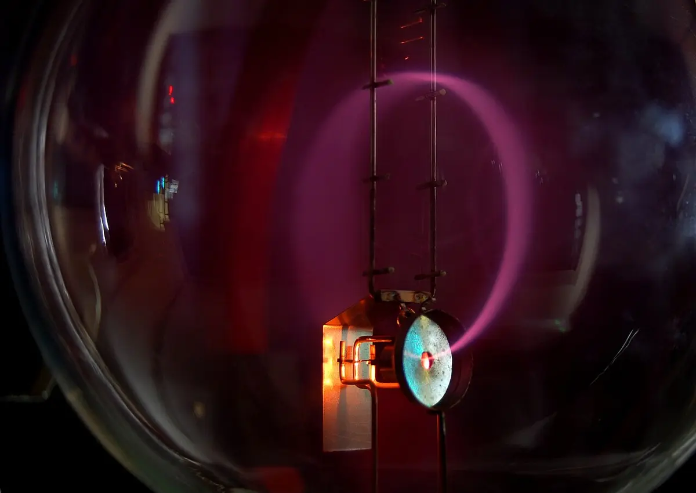

D.3Motion in electromagnetic fields
Old TV screens, particle accelerators, mass spectrometers and the northern lights all depend on how charged particles move in electric and magnetic fields. An electric field speeds particles up or bends them into parabolas; a magnetic field bends them into circles without changing their speed. This topic works out both, and the forces on wires carrying currents. There is no additional HL content in D.3.
New for 2028 For exams from 2028 the guide and data booklet add the magnetic field strength of an infinitely long straight wire, $B = \frac{\mu_0 I}{2\pi r}$, for SL and HL students.
Knowledge and science
Nature of science
Experiments. In 1897 J.J. Thomson bent beams of "cathode rays" with electric and magnetic fields and measured their charge-to-mass ratio. It was about 2000 times larger than for hydrogen ions, so the rays had to be tiny particles: he had discovered the electron.
Models. Magnetic field lines give a picture of an invisible field. Combined with the rule $F = qvB\sin\theta$, they let us predict exactly how a particle will curve.
Measurement. Until 2019 the ampere was defined by the force between two parallel wires. Today it is defined by fixing the value of the elementary charge $e$.
Global impact. Magnetic fields steer particles in cancer-treatment accelerators and in the Large Hadron Collider, and mass spectrometers identify substances from drug tests to space missions.
ToK: questions to think about
- Is a field pattern like a map? A map simplifies the land to make it useful. In what ways are field lines a simplified "map" of reality, and what do they leave out?
- How do we know about particles we can't see? Thomson never saw an electron; he inferred it from the bending of a beam. How much can be known from indirect evidence?
- Why so many hand rules? Different countries and textbooks teach Fleming's left-hand rule, a right-hand slap rule or a vector cross product, all for the same physics. Does it matter which convention we learn?
- Who owns discoveries made with huge machines? Modern particle physics needs thousands of scientists from many countries. How does knowledge production change when no single person can understand the whole experiment?
1. Charged particles in a uniform electric field
In a uniform field $E$ (for example between parallel plates, D.2), a charge $q$ feels a constant force $F = qE$, in the direction of the field for a positive charge and opposite to it for a negative one. A constant force gives a constant acceleration $a = \dfrac{qE}{m}$, so the kinematics equations of A.1 apply.
Accelerating from rest
A charge accelerated from rest through a potential difference $V$ gains kinetic energy equal to the work done on it:
Worked example: an electron gun
Electrons are accelerated from rest through a p.d. of 2000 V. Find their final speed. ($m_e = 9.11 \times 10^{-31}$ kg.)
$v = \sqrt{\dfrac{2qV}{m}} = \sqrt{\dfrac{2 \times 1.60 \times 10^{-19} \times 2000}{9.11 \times 10^{-31}}} = 2.7 \times 10^7\ \text{m s}^{-1}$, about 9% of the speed of light.
Entering a field at right angles
A particle entering the field at right angles to it keeps its original velocity along the plates, but accelerates steadily across them. Its path is a parabola, exactly like a ball thrown horizontally in a gravitational field (A.1). After leaving the field it travels in a straight line.
Worked example: deflecting an electron beam
The electrons from the previous example ($u = 2.65 \times 10^7\ \text{m s}^{-1}$) enter a uniform field of $1.0 \times 10^4\ \text{V m}^{-1}$ at right angles. The plates are 5.0 cm long. How far are the electrons deflected sideways by the time they leave the plates?
Time between the plates: $t = \dfrac{0.050}{2.65 \times 10^7} = 1.89 \times 10^{-9}$ s.
Acceleration across the plates: $a = \dfrac{eE}{m} = \dfrac{1.60 \times 10^{-19} \times 1.0 \times 10^4}{9.11 \times 10^{-31}} = 1.76 \times 10^{15}\ \text{m s}^{-2}$.
Deflection: $y = \tfrac{1}{2}at^2 = 0.5 \times 1.76 \times 10^{15} \times (1.89 \times 10^{-9})^2 = 3.1 \times 10^{-3}$ m, about 3 mm.
Linking question How can conservation of energy be applied to motion in electromagnetic fields? D.2 Work in a uniform field and the electronvolt →
Linking question How are the concepts of energy, forces and fields used to determine the size of an atom? E.1 Distance of closest approach (HL) →
2. The magnetic force on a moving charge
A magnetic field exerts a force on a charge only if the charge is moving, and not moving parallel to the field:
$B$ is the magnetic field strength in tesla (T), $v$ the speed and $\theta$ the angle between the velocity and the field. The force is greatest when $v$ is at right angles to $B$, and zero when they are parallel. A stationary charge feels no magnetic force at all.
Direction: the force is perpendicular to both $v$ and $B$. Use Fleming's left-hand rule: hold the thumb, first finger and second finger of your left hand at right angles. The First finger points along the Field, the seCond finger along the Current (the direction a positive charge moves), and the thuMb gives the force (the Motion). For a negative charge such as an electron, the "current" is opposite to its velocity, so the force is reversed.
Because the force is always at right angles to the velocity, it does no work. The magnetic force changes the particle's direction but never its speed, so its kinetic energy stays constant.
3. Circular motion in a magnetic field
When a charged particle moves at right angles to a uniform magnetic field, the force has a constant size and is always perpendicular to the velocity. That is exactly the condition for uniform circular motion (A.2). The magnetic force provides the centripetal force:
$$qvB = \frac{mv^2}{r} \qquad\Rightarrow\qquad r = \frac{mv}{qB}$$- Faster or heavier particles move in bigger circles; a stronger field or a bigger charge makes the circle smaller.
- Particles with opposite charges curve in opposite directions.
- The time for one orbit is $T = \dfrac{2\pi r}{v} = \dfrac{2\pi m}{qB}$, which doesn't depend on the speed: faster particles go round bigger circles in the same time.
- If the velocity has a component along the field, that component is unaffected, and the particle spirals along the field lines in a helix. That's how charged particles from the Sun are funnelled towards the Earth's poles, where they make the air glow as the aurora.
Worked example: a proton in a magnetic field
A proton moving at $3.0 \times 10^6\ \text{m s}^{-1}$ enters a uniform magnetic field of 0.20 T at right angles. Find the radius of its path and the time for one orbit. ($m_p = 1.67 \times 10^{-27}$ kg.)
$r = \dfrac{mv}{qB} = \dfrac{1.67 \times 10^{-27} \times 3.0 \times 10^6}{1.60 \times 10^{-19} \times 0.20} = 0.16$ m.
$T = \dfrac{2\pi m}{qB} = \dfrac{2\pi \times 1.67 \times 10^{-27}}{1.60 \times 10^{-19} \times 0.20} = 3.3 \times 10^{-7}$ s.
An electron at the same speed would curve the other way, in a circle about 1800 times smaller (because its mass is 1800 times smaller).
Linking question What causes circular motion of charged particles in a field? A.2 Circular motion →
Linking question How can the orbital radius of a charged particle moving in a field be used to determine the nature of the particle? E.3 Alpha, beta and gamma decay →
4. Measuring the charge-to-mass ratio
Rearranging $r = \dfrac{mv}{qB}$ gives $\dfrac{q}{m} = \dfrac{v}{Br}$. So measuring the radius of a particle's path in a known field, and its speed, gives its charge-to-mass ratio, which identifies the particle.
In a common school experiment, electrons are accelerated through a p.d. $V$ and then bent into a circle by the field of a pair of coils. Combining $\tfrac{1}{2}mv^2 = eV$ with $v = \dfrac{eBr}{m}$:

Worked example: measuring e/m
Electrons accelerated through 250 V move in a circle of radius 4.5 cm in a field of 1.2 mT. Find $\dfrac{e}{m}$ and compare it with the accepted value, $1.76 \times 10^{11}\ \text{C kg}^{-1}$.
$\dfrac{e}{m} = \dfrac{2 \times 250}{(1.2 \times 10^{-3})^2 \times (0.045)^2} = 1.7 \times 10^{11}\ \text{C kg}^{-1}$.
That's within about 3% of the accepted value. The radius is hard to measure precisely, and since it is squared, its percentage uncertainty is doubled.
A mass spectrometer uses the same idea. Ions with the same charge and speed curve by different amounts according to their mass, so they land in different places. This separates isotopes and identifies molecules.
5. Crossed electric and magnetic fields
If a uniform electric field and a uniform magnetic field are at right angles to each other and to the particle's velocity, the two forces can point in opposite directions. When they are equal in size, the particle passes straight through, undeflected:
$$qE = qvB \qquad\Rightarrow\qquad v = \frac{E}{B}$$Slower particles feel a weaker magnetic force and are pushed towards the electric force's direction; faster ones are bent the other way. This arrangement, a velocity selector, picks out particles of a single speed, for example before a mass spectrometer. Notice that the result doesn't depend on the charge or mass.
Worked example: choosing the speed
A velocity selector has $E = 3.0 \times 10^4\ \text{V m}^{-1}$ and $B = 0.15$ T. What speed of particle passes straight through? What happens to an alpha particle moving twice as fast?
$v = \dfrac{E}{B} = \dfrac{3.0 \times 10^4}{0.15} = 2.0 \times 10^5\ \text{m s}^{-1}$.
At twice this speed the magnetic force is twice the electric force, so the (positive) alpha particle is deflected in the direction of the magnetic force.
Linking question How are the properties of electric and magnetic fields represented? NoS D.2 Electric field lines → · D.2 Magnetic field lines →
6. The force on a current-carrying wire
A current is a flow of moving charges, so a wire carrying a current in a magnetic field feels a force (the motor effect):
$I$ is the current, $L$ the length of wire in the field and $\theta$ the angle between the wire and the field. The direction comes from Fleming's left-hand rule, with the second finger along the current. There's no force if the wire is parallel to the field.
This follows from $F = qvB\sin\theta$: in a time $t$, charge $q = It$ moves a distance $L = vt$, so $qv = IL$.
Worked example: a wire at an angle
A 0.25 m length of wire carries 3.0 A in a uniform field of 0.40 T. The wire makes an angle of 30° with the field. Find the force on it.
$F = BIL\sin\theta = 0.40 \times 3.0 \times 0.25 \times \sin 30^\circ = 0.15$ N.
7. The field of a straight wire and the force between parallel wires
The field of a long straight wire New for 2028
The field lines around a long straight wire are circles centred on the wire (D.2, right-hand grip rule). The 2028 data booklet adds the size of this field at a distance $r$ from an infinitely long wire carrying current $I$:
$B$ is proportional to the current and inversely proportional to the distance: twice as far away, half the field. That is why the circles on a field-line diagram get further apart with distance. $\mu_0 = 4\pi \times 10^{-7}\ \text{T m A}^{-1}$.
Worked example: a compass near a cable New for 2028
A long straight cable carries a steady current of 12 A. Find the magnetic field strength 3.0 cm from the cable, and compare it with the Earth's field of about $5 \times 10^{-5}$ T.
$B = \dfrac{4\pi \times 10^{-7} \times 12}{2\pi \times 0.030} = 8.0 \times 10^{-5}\ \text{T}$
This is bigger than the Earth's field, so a compass held this close to the cable would swing well away from north. At 30 cm the field is ten times smaller ($8.0 \times 10^{-6}$ T), and the compass hardly moves.
This equation also explains the force between two wires below: wire 2 sits in wire 1's field $B_1 = \dfrac{\mu_0 I_1}{2\pi r}$, so the force on a length $L$ of wire 2 is $F = B_1 I_2 L$, which gives $\dfrac{F}{L} = \dfrac{\mu_0 I_1 I_2}{2\pi r}$.
Each current-carrying wire sits in the magnetic field of the other, so two parallel wires exert forces on each other:
$\frac{F}{L}$ is the force per metre of wire, $r$ the separation and $\mu_0 = 4\pi \times 10^{-7}\ \text{T m A}^{-1}$ the permeability of free space. Currents in the same direction attract; currents in opposite directions repel. By Newton's third law, the forces on the two wires are equal and opposite, even if the currents are different.
Worked example: power cables
Two long parallel wires 5.0 cm apart carry currents of 20 A and 15 A in the same direction. Find the force on each 1.0 m length of wire, and its direction.
$\dfrac{F}{L} = \dfrac{4\pi \times 10^{-7} \times 20 \times 15}{2\pi \times 0.050} = 1.2 \times 10^{-3}\ \text{N m}^{-1}$, so 1.2 mN on each metre, attracting the wires towards each other.
The forces are small for ordinary currents, but the huge currents in a short circuit can make cables jump violently.
The old definition of the ampere was based on this: two long wires 1 m apart, each carrying 1 A, attract with a force of $2 \times 10^{-7}$ N per metre.
8. Common mistakes
- Saying a magnetic field speeds a charge up. The magnetic force is perpendicular to the velocity: it changes the direction only, and the kinetic energy stays constant. (An electric field can change the speed.)
- Forgetting to reverse the force for negative charges when using Fleming's left-hand rule.
- Using $\sin\theta$ with the wrong angle. $\theta$ is between the velocity (or current) and the field. Parallel means zero force.
- Treating motion in an electric field as circular, or in a magnetic field as a parabola. Uniform $E$: constant force, parabola. Uniform $B$ (perpendicular): circle.
- Saying the bigger current feels the bigger force between parallel wires. The forces are equal and opposite (Newton's third law).
- Getting attraction and repulsion the wrong way round. Same direction attracts; opposite directions repel (the opposite of the rule for charges).
- Forgetting to convert mT to T and cm to m.
9. Check your understanding
An electron and a proton enter the same magnetic field at the same speed, at right angles to it. Compare their paths.
They curve in opposite directions (opposite charges). The electron's radius is about 1800 times smaller, because $r = \frac{mv}{qB}$ and its mass is 1800 times smaller.
The speed of a charged particle moving in a circle in a magnetic field is doubled. What happens to the radius and to the time for one orbit?
The radius doubles ($r \propto v$). The period stays the same ($T = \frac{2\pi m}{qB}$).
Why does a magnetic field do no work on a moving charge?
The magnetic force is always perpendicular to the velocity, so there is no component of force in the direction of motion. Work = force × displacement in the direction of the force = 0.
A wire carrying current due north lies in a vertical magnetic field pointing downwards. In which direction is the force on the wire?
West. Fleming's left-hand rule: first finger down (field), second finger north (current), thumb points west.
The current in both of two parallel wires is doubled, and their separation is halved. By what factor does the force per metre change?
$\frac{F}{L} \propto \frac{I_1I_2}{r}$: $\frac{2 \times 2}{0.5} = 8$ times larger.